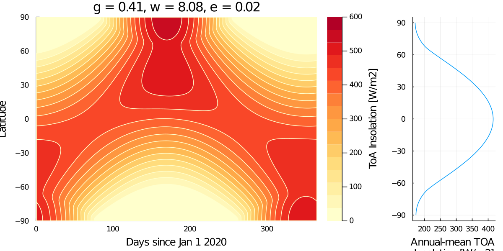
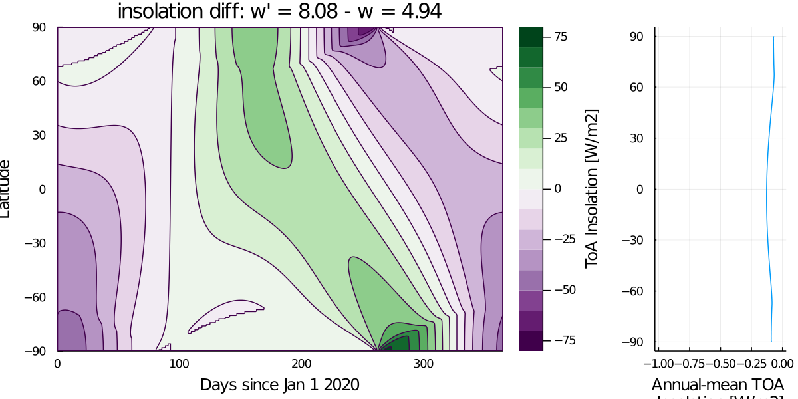
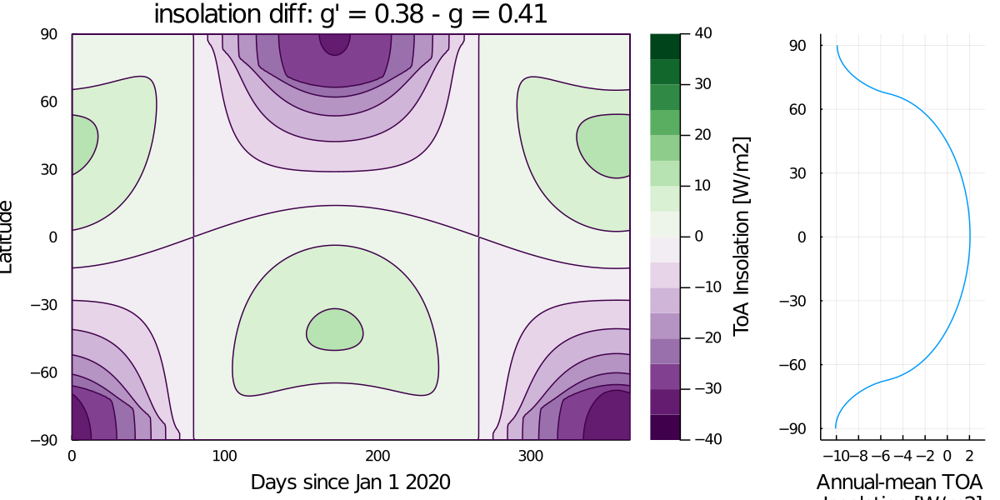
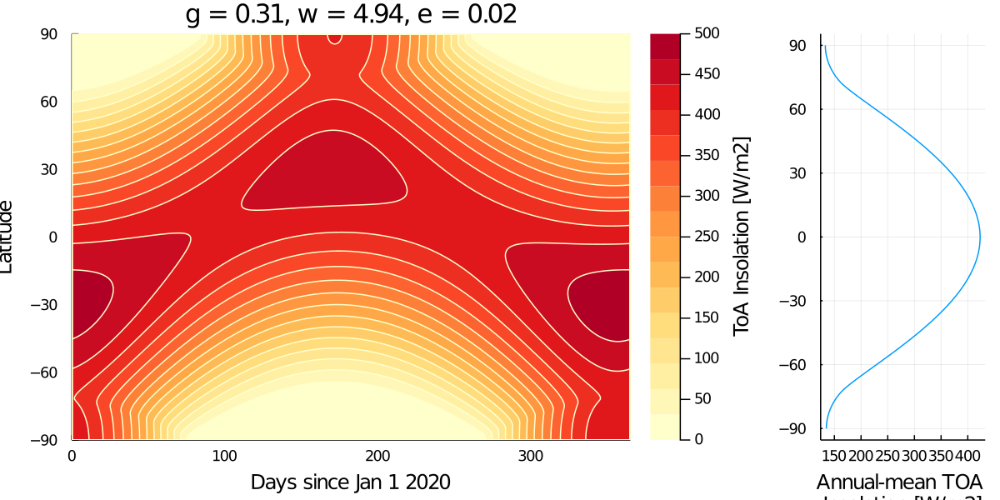
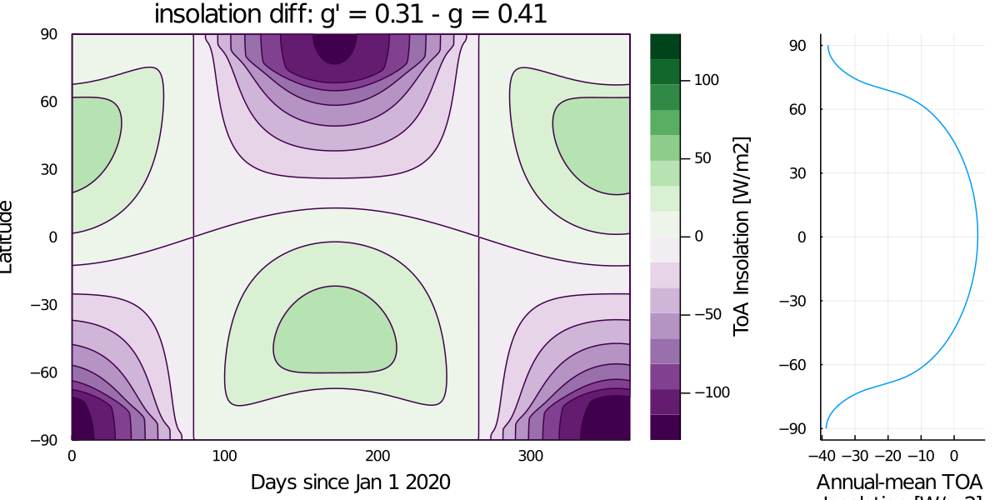
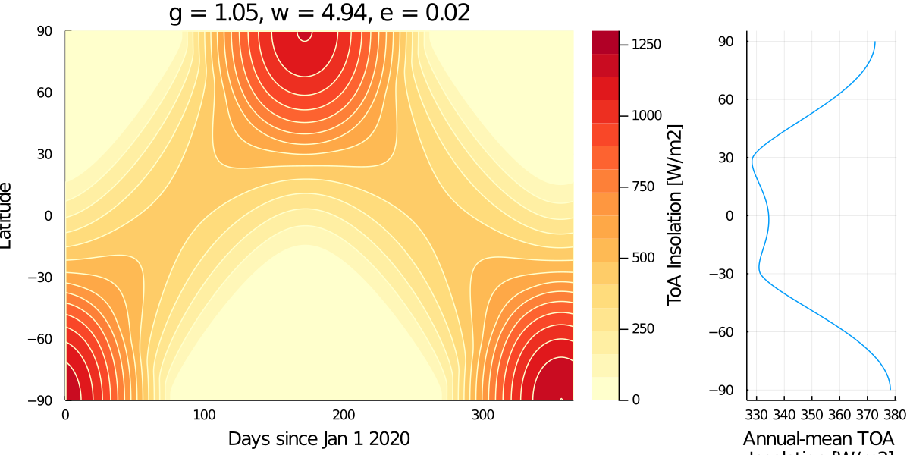
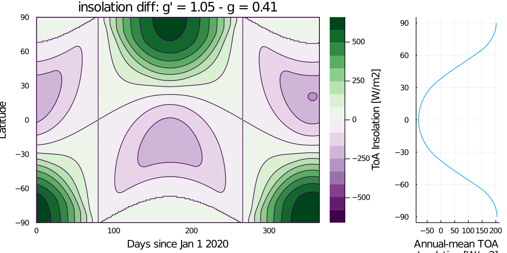
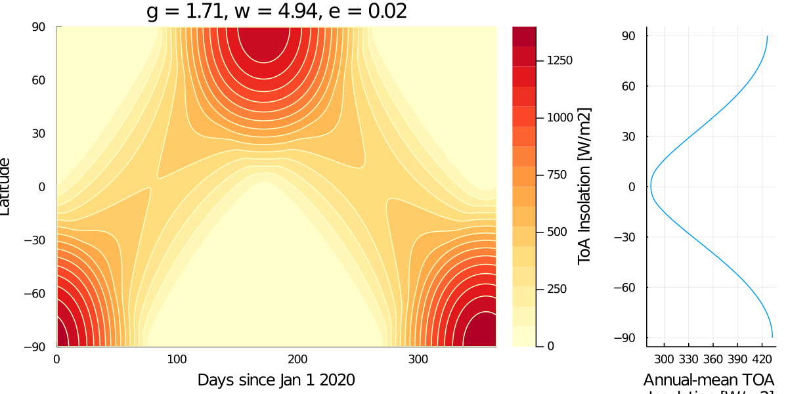
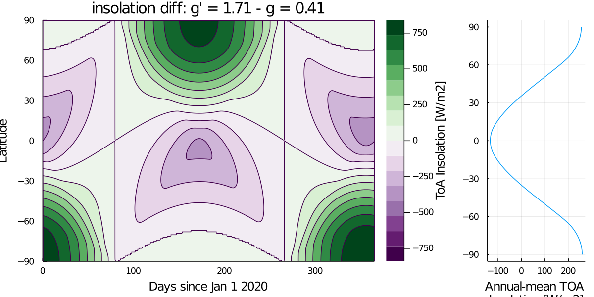

Insolation Examples
These examples are from a homework assignment in ESE 101 at Caltech
Example 1
using CLIMAParameters
using CLIMAParameters.Planet
struct EarthParameterSet <: AbstractEarthParameterSet end
const param_set = EarthParameterSet()
include("plot_insolation.jl")
γ0 = obliq_epoch(param_set)
ϖ0 = lon_perihelion(param_set)
e0 = eccentricity_epoch(param_set)
days, lats, F0 = calc_day_lat_insolation(365, 180, param_set)
plot_day_lat_insolation(days, lats, F0, "YlOrRd", title, "insol_example1.png")Example 2
# turn longitude of perihelion by 180°
CLIMAParameters.Planet.lon_perihelion(::EarthParameterSet) = lon_perihelion_epoch(param_set) + π
ϖ1 = lon_perihelion(param_set)
days, lats, F1 = calc_day_lat_insolation(365, 180, param_set)
plot_day_lat_insolation(days, lats, F1, "YlOrRd", title, "insol_example2a.png")
plot_day_lat_insolation(days, lats, F1-F0, "PRGn", title, "insol_example2b.png") 
Example 3
# perihelion back to normal. decrease γ to 22.0°
CLIMAParameters.Planet.obliq_epoch(::EarthParameterSet) = deg2rad(22.0)
γ1 = obliq_epoch(param_set)
days, lats, F2 = calc_day_lat_insolation(365, 180, param_set)
plot_day_lat_insolation(days,lats,F2,"YlOrRd", title, "insol_example3a.png")
plot_day_lat_insolation(days, lats, F2-F0, "PRGn", title, "insol_example3b.png")
Example 4
# decrease γ further to 18.0°
CLIMAParameters.Planet.obliq_epoch(::EarthParameterSet) = deg2rad(18.0)
γ2 = obliq_epoch(param_set)
days, lats, F3 = calc_day_lat_insolation(365, 180, param_set)
plot_day_lat_insolation(days,lats,F3,"YlOrRd", title, "insol_example4a.png")
plot_day_lat_insolation(days, lats, F3-F0, "PRGn", title, "insol_example4b.png") 
Example 5
# now change obliquity to 60.0°
CLIMAParameters.Planet.obliq_epoch(::EarthParameterSet) = deg2rad(60.0)
γ3 = obliq_epoch(param_set)
days, lats, F4 = calc_day_lat_insolation(365, 180, param_set)
plot_day_lat_insolation(days,lats,F4,"YlOrRd", title, "insol_example5a.png")
plot_day_lat_insolation(days, lats, F4-F0, "PRGn", title, "insol_example5b.png") 
Example 6
# now change obliquity to 97.86°
CLIMAParameters.Planet.obliq_epoch(::EarthParameterSet) = deg2rad(97.86)
γ4 = obliq_epoch(param_set)
days, lats, F5 = calc_day_lat_insolation(365, 180, param_set)
plot_day_lat_insolation(days,lats,F5,"YlOrRd", title, "insol_example6a.png")
plot_day_lat_insolation(days, lats, F5-F0, "PRGn", title, "insol_example6b.png") 